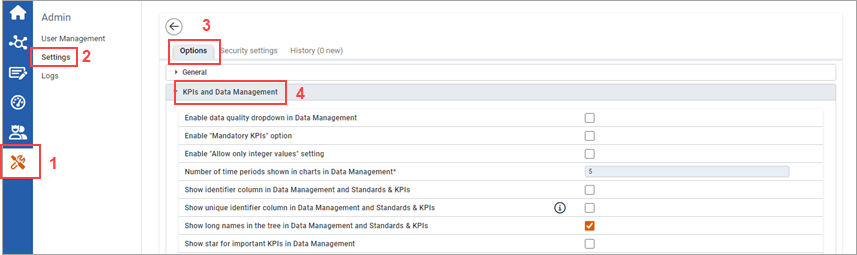
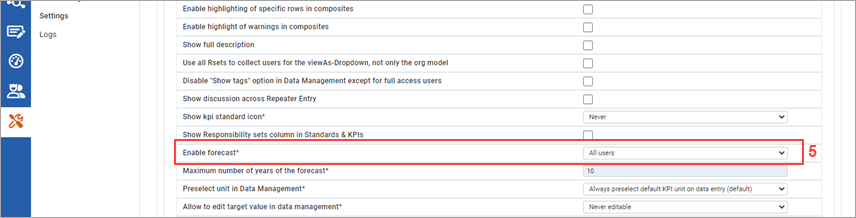

The Data Forecast Tool can be used to compare KPIs of actual performance with forecasted performance.
For forecast values, the autoregressive integrated moving average (ARIMA) model is applied. ARIMA is a method for forecasting or predicting future outcomes based on a historical time series. It is based on the statistical concept of serial correlation, where past data points influence future data points. Here ARIMA makes use of lagged moving averages to provide smooth time series data. Autoregressive processes are combined with moving average processes. An ARIMA model can be understood by outlining each of its components as follows:
To enable the Data Forecast tool:


| 1 | Click Admin. |
| 2 | Click Settings. |
| 3 | Ensure that you are on the Options tab . |
| 4 | Open the KPIs and Data Management settings. |
| 5 | Next to Enable forecast, select either "All Users" or "Only for Full Access User", depending on who you would like to give access to use the Data Forecast tool. |
| Scroll down and click Save. |
Once the Data Forecast tool has been enabled, the forecasting time periods must be set up (see Time Periods). Then adjustments can be made to the Data Forecast settings (see Adjusting Data Forecast Settings), and then Data Forecast can be viewed in the form of chart (see Viewing Data Forecast in a Chart).